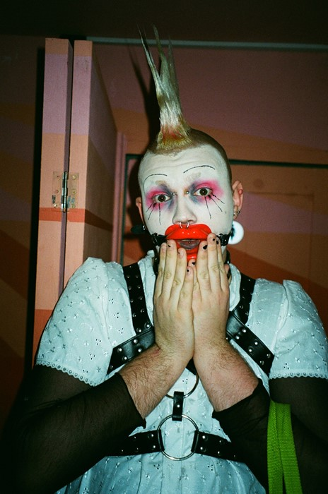
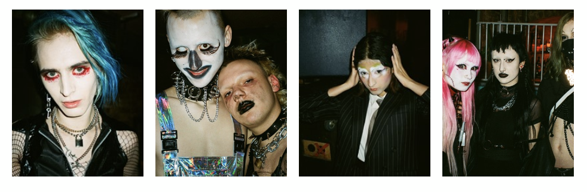

DAZED BEAUTY

TREMORS IS THE CLUB NIGHT BRINGING ONLINE AVATAR LOOKS FROM URL TO IRL
THE EVENT RETURNED TO EAST LONDON, BRINGING WITH IT A COMMUNITY OF PEOPLE WHOSE BEAUTY LOOKS ARE FOUNDED IN EXTREMITY AND EXPERIMENTATION
January 24 saw the return of Tremors, an east London party premised around hardcore dance music, performance art, and otherworldly, verging on terrifying, beauty looks. Past nights have seen household hardcore and PC music names like Spinee, GFOTY, and Panteros666 play, alongside an artistic and online presence that includes holographic installations for Hanger and a virtual avatar campaign for Walter van Beirendonck. And they threw the dirty, underground afters for Danny L Harle’s Harlecore series at Southbank Centre.

After a break since last summer, the collective avatars and characters returned to their regular venue Dream Bags Jaguar Shoes, in the face of the blue denim and open-neck shirts that saturate their surroundings. Shoreditch seemed unsure what to do with the striped, fingerless, elbow-length gloves, enormous knee-high platform boots, the abundance of fishnets, cat ears, and the occasional person on a leash. Aside from the fabulous out-of-place-ness of it all, inside the venue is what Tremors’ founder NURSE3D called the “IRL space” for the online community from which Tremors initially grew. It’s a community geared towards creating “superhero versions of ourselves” and “avatars,” with strong links to the 3D art movement (NURSE3D specifically is a pale, gothy little nymph with fangs, and a hugely long tongue), who use Tremors to “push that to the next extreme” – to be that IRL. Tremors is a response to “wanting more than just an online avatar and it creeping through into (IRL rather than digital) beauty”, and real physical spaces.
While online spaces and the creativity and freedom offered within them are valuable, the opportunity to enact it IRL seems important. Mainstream beauty occurs on the body, or claims to (read: airbrushing) – but beauty at Tremors never claims to be rooted in anything real. It’s a physical imitation of the digital, a use of the body to express to the world what has been expressed online. The self-expression that this leads to is beautiful – it’s a use of beauty practices that has no attachment to reality or convention, one that becomes pure vision and expression.
Online culture’s influence is obvious in this, NURSE3D also credits going to Slimelight with a small crew of cybergoths thinking: ‘What if a whole party could be like this?’. From this, the community has built itself into an IRL space that veers towards colour, extremity, and experimentation in every sense. Hair and make-up take centre stage across the night – everything from Storm St Claire‘s tear-streaked black eyeliner to Spoooky Kid’s two bleached tufts of hair.